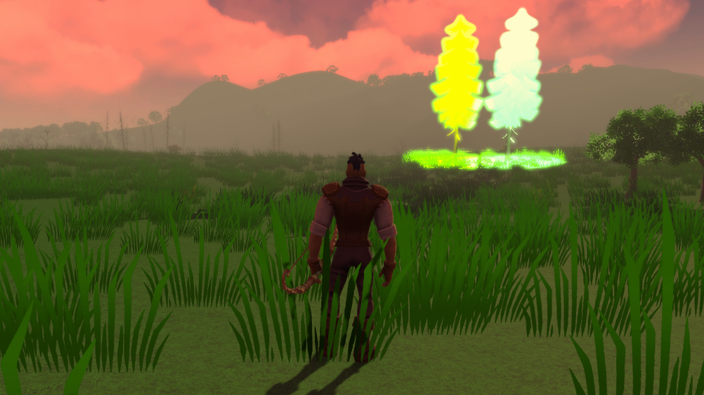
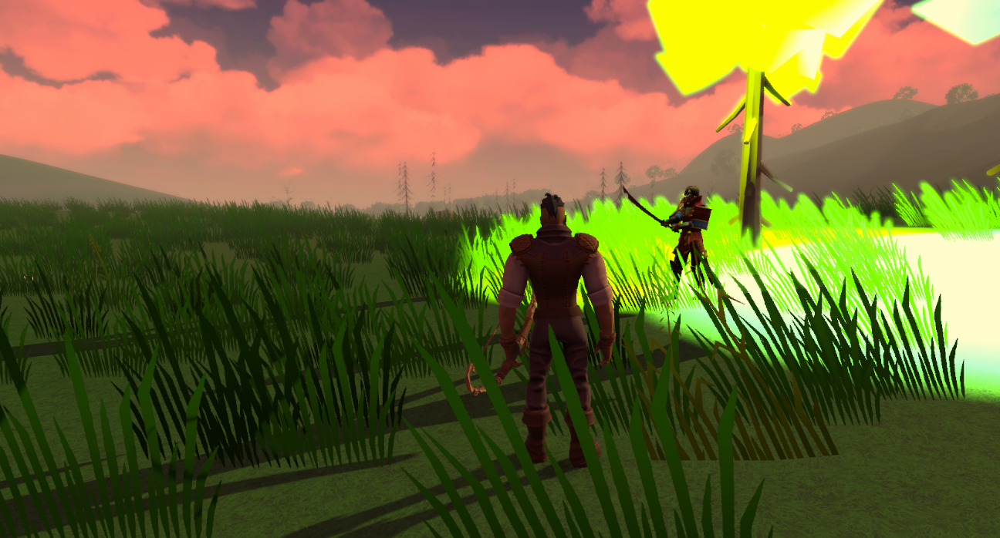
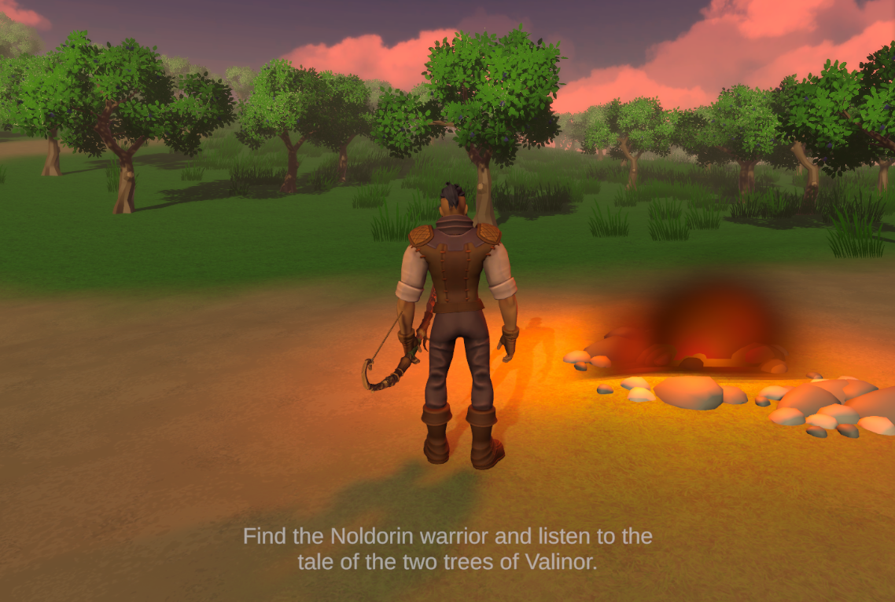
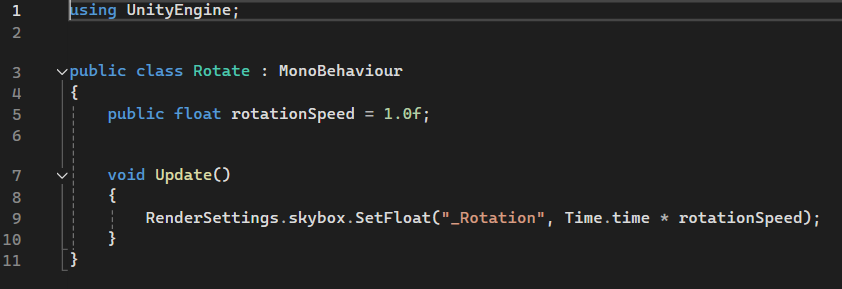
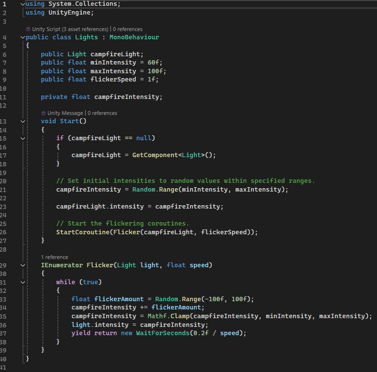

Oromë the Hunter
Status: Finished /Autumn 2023
Total work hours: 65
Tools: Unity, Visual Studio
Scripting: C#
AI: Narakeet
Project Description
This was simply a frontend level design project that I made by myself in my second year of studies. All assets were free and used under CC0 license from the Unity Asset Store. The purpose of the course was to get better acquainted with the Unity game engine editor. New skills acquired during this course were anything related to frontend including the terrain tool, various lights, animators, animations, particle effects, sounds, virtual cameras and much more. I also did a tiny bit of scripting.
Gameplay trailer
Tasks
Terrain was made using the Unity terrain painter tool. Terrain included different types of trees with and without leaves, grass and rocks. All of these were later affected using the environmental wind tool.
Different lights were added including baked area lights as well as point lights for the two trees and spot lights for different effects such as the flickering camp fires (the flicker was scripted. Several post processing layers were also added to produce an unnatural glow in the clouds. The skybox was scripted to rotate to make it seem as though the clouds were moving. Other effects such as a tweaked white balance and depth of field were made to make the visuals warmer and blur out distant objects.
The Unity Animator was used to create walking and running animations. The animations were imported from Mixamo.com and implemented using a blend tree. I also practiced making particle effects from scratch including fires, smoke and giving fire arrows a smoke trail.
Environmental sounds were implemented using an AudioManager. All sounds were free and used under CC0 license from FreeSound.org. A SoundManager was created to control the ambient sounds including birds chirping, walking sounds, the bow flexing and the arrow being released, creature sounds (bunny, deer, bear), The exception was the narration by the "Noldorin warrior" standing guard in front of the glowing trees. The narration was done using Narakeet.com
Three different virtual cameras were used to immerse the player depending on the state of the player character. The default camera was a third-person view from a medium distance behind the character for regular movement and idling. The second was for sprinting, in which camera shake was added and the distance of the camera from the character was increased so as to show a wider area around the player. Lastly an aiming camera was implemented to zoom in close to the player and look over the character's shoulder as they flex the bow.
Project Reel

The player character and the iconic
two trees of Valinor illuminating
elvenhome.

A Noldorin warrior narrating the
history of the two trees with an AI
generated voice by Narakeet.

The player character in the 'aiming'
vcam approaching a bear.

A campfire, trees and clouds.

The stub of a script used to rotate
the skybox.

The script used to vary the flicker
of the campfires.